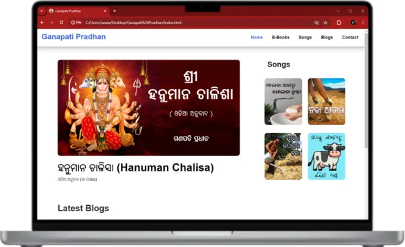
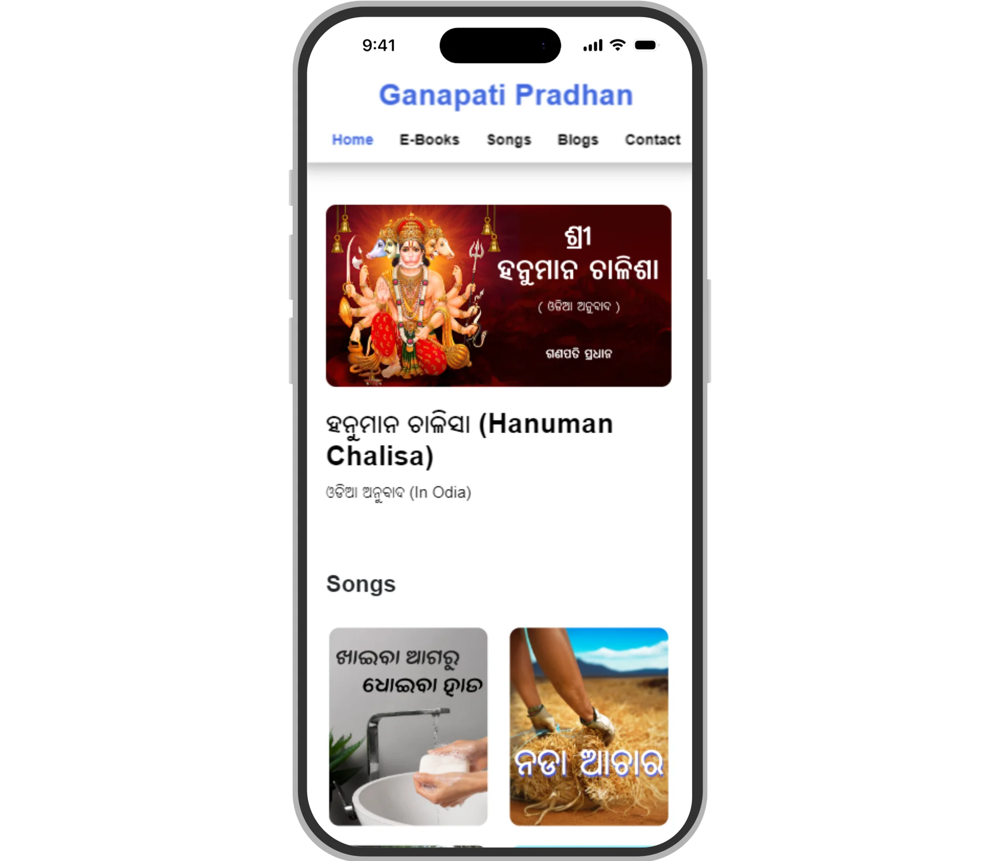
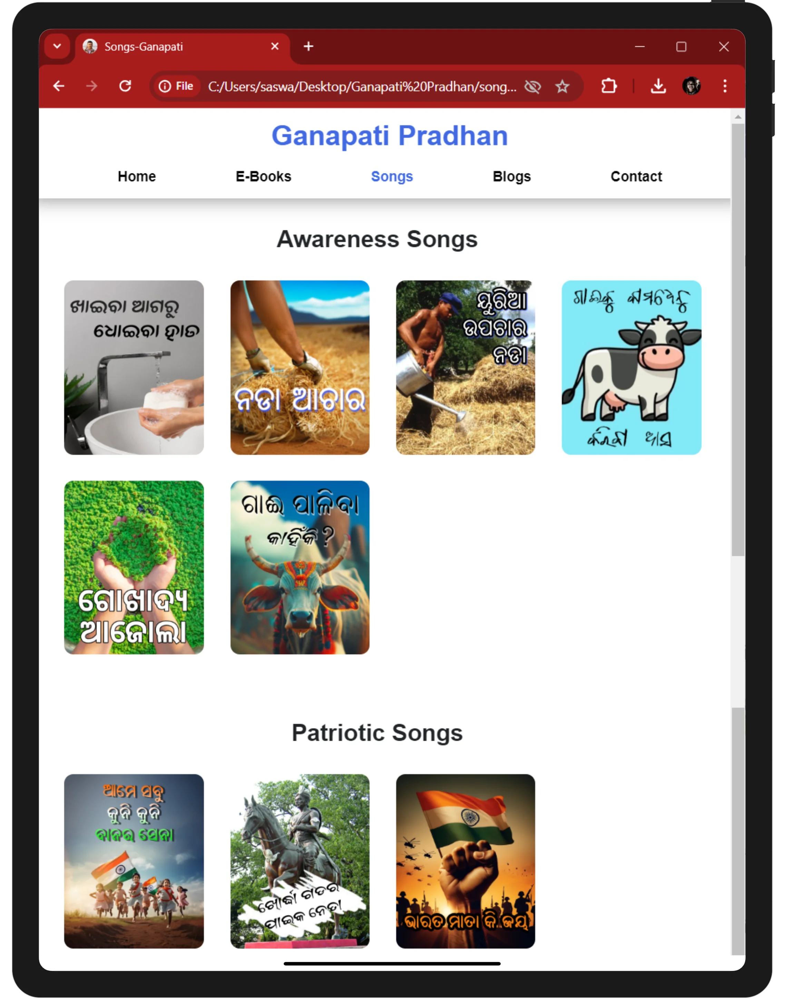
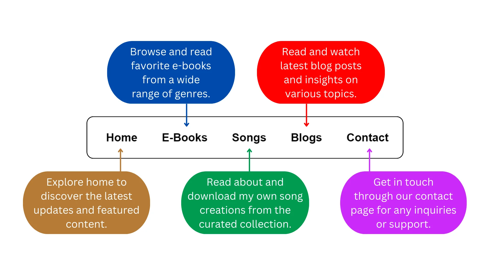

A major release introducing the interactive Landing Page Collections showcase, unhindered content access, expanded digital library, and modern file system refactoring.
Whats New:
Introduced dynamic reading themes, personal private collections, developer communication channels, and transition stability improvements.
Whats New:
A comprehensive stability and quality update focused on document rendering reliability, UI alignment, and touch navigation improvements.
Bug Fixes:
Introduced structured release tracking and dedicated personal portfolio archives to enhance site navigation.
Whats New:
Enhanced multimedia integration, introduced interactive sound feedback, and expanded direct communication channels.
Whats New:
Initial public beta release of the official digital platform celebrating the creative and literary works of Ganapati Pradhan.
Whats New: